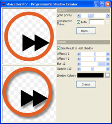
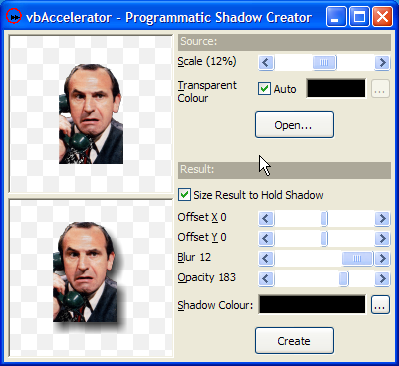

VB5 Alpha Shadow Creator (96K)
VB5 Alpha Shadow Creator (96K)
 VB6 Alpha Shadow Creator (89K)
VB6 Alpha Shadow Creator (89K)
 16 Apr 2004
16 Apr 2004
First Posted
 Subclassing Without The Crashes
Subclassing Without The Crashes
 Softening, Blurring, Sharpening and Embossing images
Softening, Blurring, Sharpening and Embossing images

Programmatic Creation of Drop-Shadows
Create smooth alpha-blended drop-shadows from any bitmap source
This sample demonstrates creating an alpha-blended drop-shadow for a bitmap in code. Intensity, colour, offset and blurring of the effect can all be easily controlled. For reasonably sized source bitmaps, the code is efficient enough to run in real-time on most machines.
Creating a Drop Shadow
To create a shadow for an object, the main thing you need to do is to detect the boundaries and then draw a version of it with some offset in the horizontal and vertical directions which give an idea of how far the object is from its background given the direction of the light source. The simplest technique is just to draw the shadow in black where the object is opaque and transparently otherwise. However, in life shadows often have less than sharp edges and a more realistic-looking effect can be achieved by blurring the edges of the shadow.
Blurring or softening an image is a simple image processing technique which is usually done by averaging the pixels in a given area. Details of applying this technique on 24-bit colour images are provided in the article Softening, Blurring, Sharpening and Embossing images. For a drop-shadow, however, ideally you would like to be able to apply the shadow to any background. The easiest way to do this is to take advantage of an alpha-channel in the bitmap to define the transparency. Blurring is then performed in exactly the same way except the alpha channels is also included in the blur effect, and the alpha is set to zero wherever the source image is transparent.
The steps to creating a drop shadow are shown in the image below. The first frame shows the source image, which uses a cyan colour to represent transparent pixels. This is then fed into the blur routine: all cyan pixels are interpreted as transparent and all other pixels are regarded as black. The resulting image can then be painted with the cyan pixels transparent over the alpha shadow, and the resulting image will work over any background because the alpha combines the shadow pixels naturally with the underlying image:
Creating a Drop Shadow
Coding It
This sort of code makes my head hurt. So you find the pixel in the source image, and then you add 4 for the shadow offset but subtract 8 for the blur offset and then, oh, hang on a minute, am I at pixel (x+4, y-3) in the source or the destination and should I check if this is less than the offset or 0 before I read or write the byte? Next thing I'm dreaming and I can't get out of bed until all of the planes are in the exact right order and the mugs have the just right amount of liquid in them. That may just be me though.
Anyway, the cDIBShadowCreator wraps up the result and provides an easier to way to take a source bitmap (loaded into a cAlphaDIBSection class) and to set the shadow's offset (OffsetX, OffsetY properties), the amount of blur (MatrixSize), shadow colour (ShadowColor) and translucency (Opacity). You can optionally also resample the image with alpha blend using the SourceScale property.
This code demonstrates the using the code with default options:
Private m_cShadowCreator As cDIBShadowCreator
' Load the source image:
Dim sPic As StdPicture
sPic = LoadPicture("C:\mypicture.bmp")
Dim cSource As New cAlphaDibSection
cSource.CreateFromPicture sPic
' Add source image to the shadow creator:
m_cShadowCreator.DibSource = cSource
' Create a shadowed version using the defaults:
m_cShadowCreator.CreateShadow
' Display the shadow on this form:
m_cShadowCreator.DibResult.AlphaPaintPicture Me.hDC
This sort of code can be used to dynamically create shadowed buttons from a source image, and allow them to "pop-up" when the mouse is over by providing a large shadow offset and then use a smaller shadow offset when the button is down.
Conclusion
This sample demonstrates how to programmatically create drop-shadows from any image with nice soft edges and controllable colour, transparency and fuzziness. Although the algorithm provided is used against a DIB Section it could also be easily applied to any 32bit bitmap source.